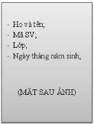
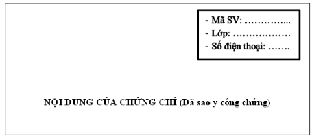

Sinh viên thuộc Viện Đào tạo Nghề nghiệp đã thi đạt tốt nghiệp, tích lũy
đủ số tín chỉ của chương trình đào tạo, cần làm hồ sơ xét công nhận tốt
nghiệp theo quy trình sau:
-
Tải mẫu “Đơn đề nghị xét công nhận tốt nghiệp”
tại đây, điền đầy đủ thông tin.
-
Ghi thông tin cá nhân lên “Góc trên, bên phải” của các
chứng chỉ điều kiện (đã sao y, công chứng). Mặt sau của ảnh
ghi: Họ tên, Mã SV, Lớp, ngày tháng năm sinh.


-
Nộp hồ sơ tại Văn phòng Viện Đào tạo Nghề nghiệp.
-
Tra cứu kết quả tốt nghiệp
tại đây.
🔔 Lưu ý: Hồ sơ xét tốt nghiệp gồm:
- Đơn đề nghị xét tốt nghiệp (02 bản, giữ lại 01 bản).
- Chứng B Tiếng Anh (trừ ngành Tiếng Anh).
- Chứng chỉ tin học (trừ nhóm ngành CNTT).
- Chứng chỉ kỹ năng bàn phím.
- Chứng chỉ kỹ năng giao tiếp.
- Ảnh 4x6 (khóa 2015 trở về trước) hoặc 3x4 (khóa 2017 trở đi).